Овощи ферментируются в рассоле без уксуса, лишних консервантов и усилителей вкуса.
ферментированные овощи по русской традиции
Соленый сад
Ферментированные овощи и соленья в маленьких баночках
Свекла, соленые огурцы, квашеная капуста, ассорти, моченые яблоки, терн и соленые грибы в прозрачном стекле: темная ткань на крышке, тонкая веревка и аккуратная наклейка с названием вкуса.
стекло 180-250 мл
без уксуса
подарочные сеты
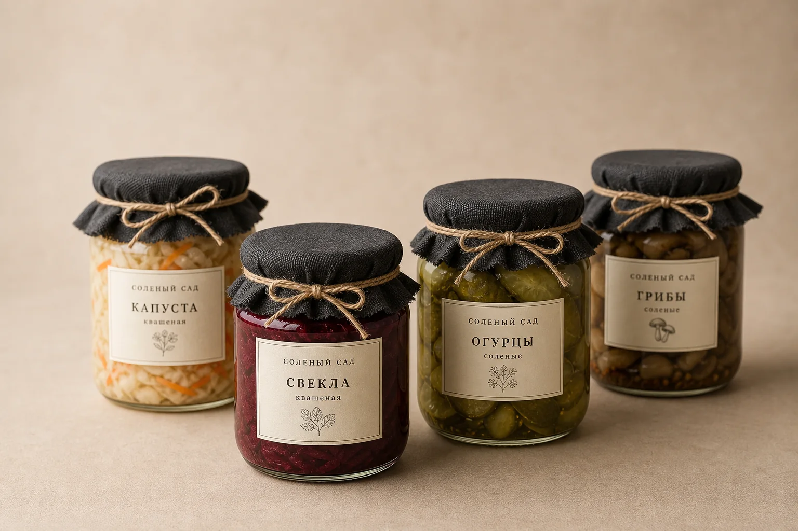
180-250 мл
маленький формат для проб и подарков
Стекло
видно цвет овощей и рассола
Состав
овощи, соль, специи, время
польза ферментации
Живой вкус, который делает еду богаче
Ферментированные продукты ценят за естественную кислинку, клетчатку, простые ингредиенты и насыщенный вкус без тяжелых соусов. Они помогают разнообразить рацион и легко добавляют к столу овощи, ягоды и моченые фрукты каждый день.
Мы не обещаем лечебный эффект: это честная еда с понятным составом, приготовленная методом молочнокислой ферментации.
Баночка помогает добавить к обычному ужину свеклу, капусту, огурцы, ассорти или яблоки.
Ферментированные овощи освежают жирные и плотные блюда: картофель, мясо, каши, хлеб.
Овощи, соль, специи и время. Каждая партия небольшая, вкус сезонный и живой.
витрина баночек
Вкусы для ужина, закуски и красивого подарка
Базовая линейка дополнена более редкими вкусами старой кухни: ассорти, моченые яблоки, терн и пряная морковь делают заказ богаче и интереснее.
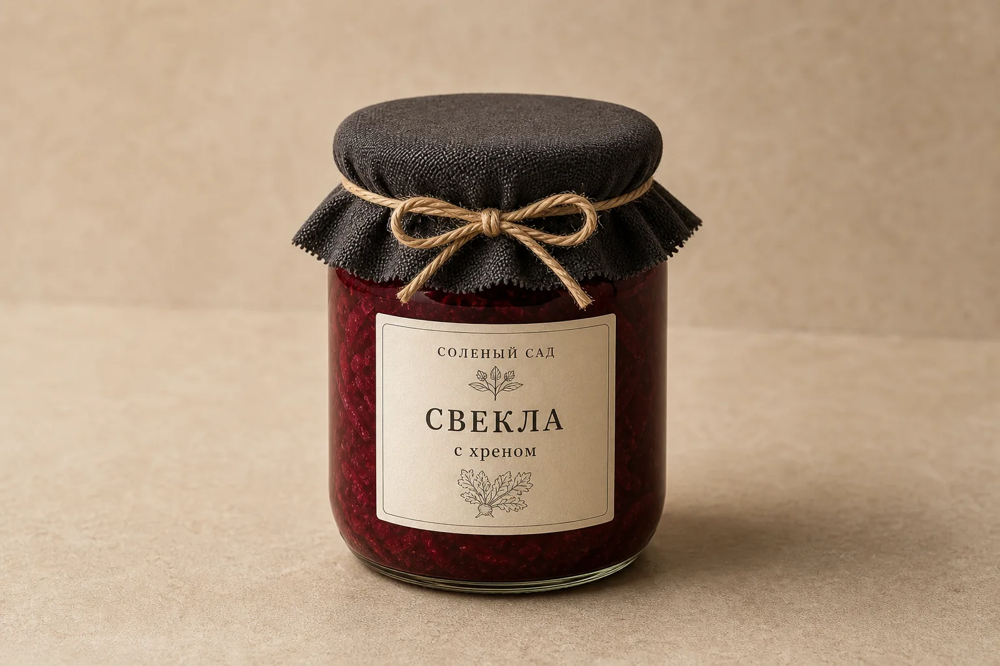
220 мл
Свекла с хреном
Бордовый цвет, мягкая острота и плотный вкус к картофелю, мясу и ржаному хлебу.
220 мл
Огурцы с укропом
Хруст, чеснок, укроп и прозрачный рассол. Маленькая банка для одного ужина.
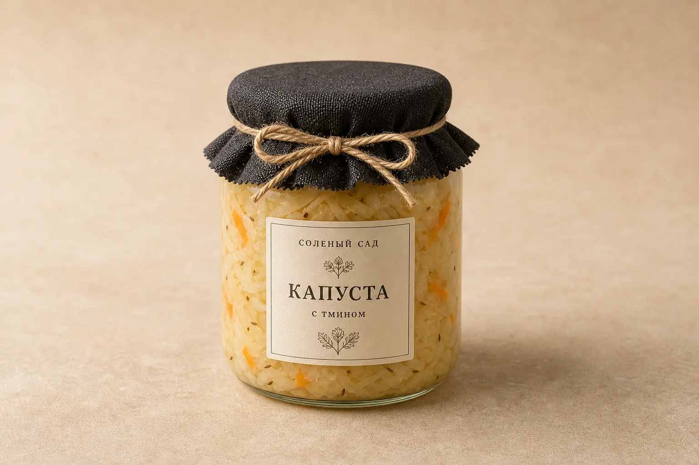
250 мл
Капуста с тмином
Светлая, кислая и чистая. Хорошо раскрывается с кашами, супами и птицей.
сезонный вкус
Соленые грибы
Насыщенный вкус старой кухни в маленьком формате. Для картофеля, масла и зелени.
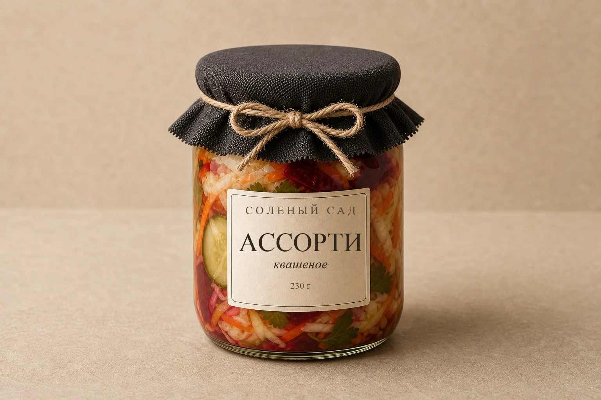
250 мл
Ассорти к русскому столу
Капуста, огурец, морковь и свекла в одной банке. Самая нарядная позиция для первого заказа.
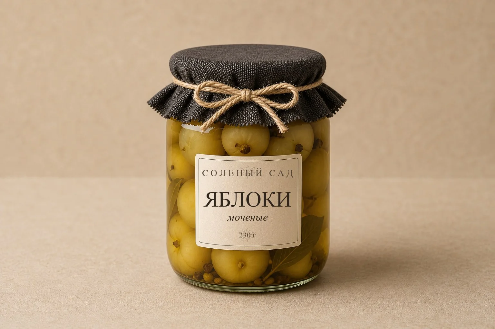
250 мл
Моченые яблоки
Мягкая кисло-сладкая классика к птице, сырам, кашам и позднему завтраку.
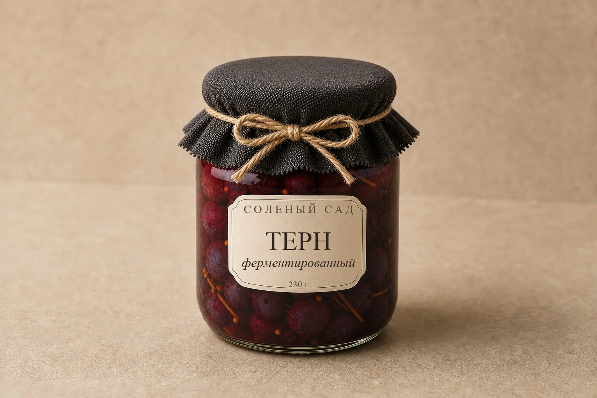
редкая партия
Терн
Дикий терпкий вкус, глубокий цвет и красивая подача к мясу, сырам и праздничному столу.
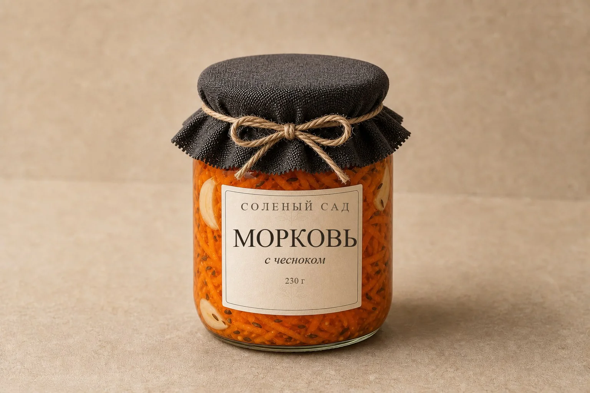
220 мл
Морковь с чесноком
Сочная, пряная и солнечная. Хороша к плову, крупам, мясу и простой тарелке с хлебом.
готовые сеты
Соберите полку из нескольких вкусов
Пробный набор
Свекла, огурцы и ассорти. Хороший первый заказ или небольшой подарок к ужину.
Заказать за 990 ₽Русский стол
Овощи, ассорти, моченые яблоки, терн и карточка с идеями подачи.
Заказать за 2 450 ₽Свой набор
Выберите любые вкусы, а мы соберем их в одной спокойной подарочной упаковке.
Написать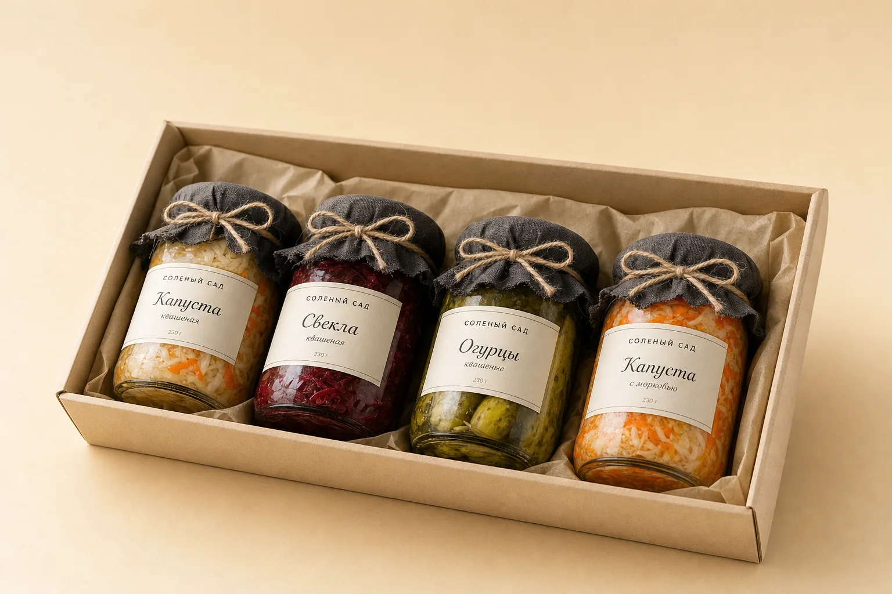
подарки и поводы
Когда хочется подарить не сладкое, а вкусное
Набор ферментированных овощей хорошо смотрится как гастрономический подарок: к ужину, в гости, на семейный праздник или для человека, который любит красивую еду с понятным составом.
Вместо очередной коробки конфет: маленькие баночки к картофелю, хлебу и горячему.
Сет выглядит собранно на столе и не требует отдельной сервировки.
Удобный формат, чтобы держать в холодильнике несколько вкусов сразу.
с чем подать
Баночка быстро превращает простой стол в собранный ужин
Свекла, грибы и огурцы дают горячему блюду свежую кислинку и хруст.
Маленькая баночка подходит для завтрака, закуски или тарелки с зеленью.
Моченые яблоки, терн и морковь балансируют плотные блюда без тяжелых соусов.
Несколько вкусов в коробке выглядят как готовый гастрономический подарок.
от рассола до подарка
Мини-история о том, как баночка становится готовым набором
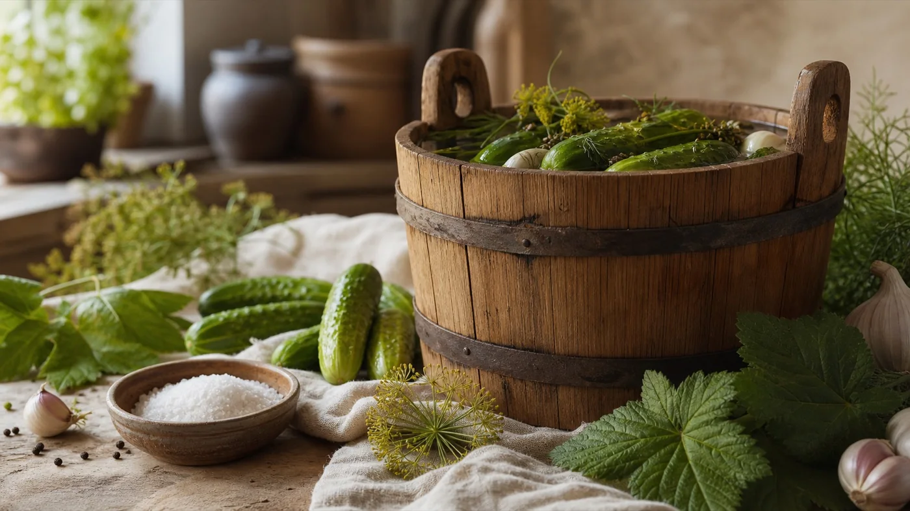
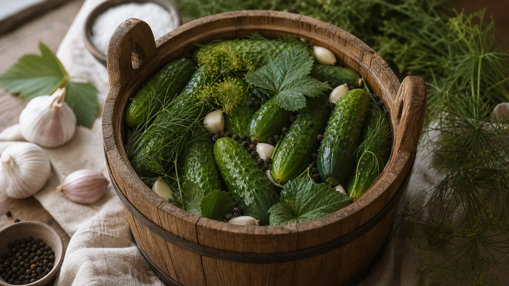
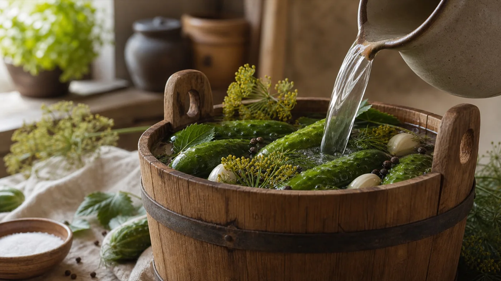
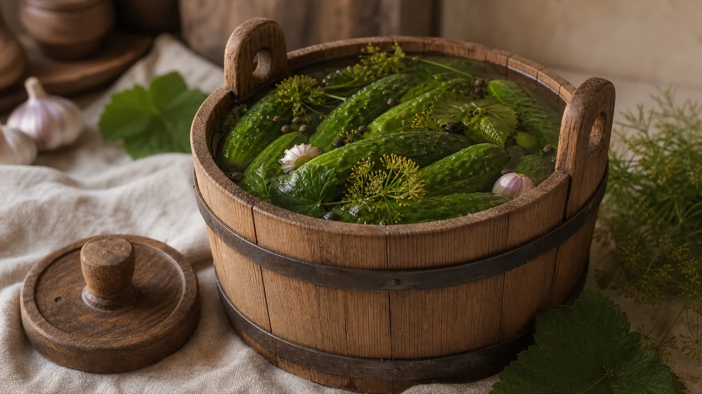
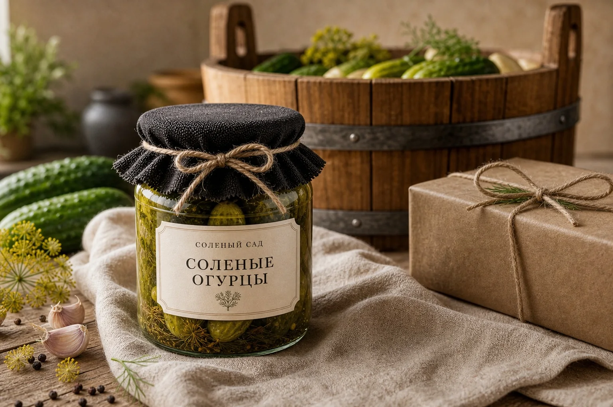
старая техника, современная подача
Не сувенирная русскость, а еда с памятью
Ферментация была частью русской кухни задолго до моды на пробиотики: овощи, фрукты, ягоды, соль, специи, прохлада и терпение. Мы оставляем этот смысл, но убираем визуальный шум: никакой ярмарки, только чистый продукт в красивой маленькой банке.
01
К картофелю
Свекла, грибы, ассорти и огурцы дают простой ужин с хорошей кислинкой.
02
К хлебу и маслу
Маленькие баночки удобно открывать прямо к завтраку или закуске.
03
К праздничному столу
Сет с терном и мочеными яблоками выглядит как готовый гастрономический подарок.
доставка и хранение
Баночки приезжают готовыми к подаче
Хранение
Держите в холодильнике. После открытия используйте чистую вилку и закрывайте крышку.
Доставка
По городу курьером от 250 ₽. При заказе от 2 500 ₽ доставка по городу бесплатно.
Подарок
Для набора можно добавить карточку с пожеланием и короткими идеями подачи.
первые дегустации
Что говорят о баночках
“Свекла выглядит как маленький ресторанный деликатес. Поставила к картофелю — ушла вся банка.”
Анна, пробный набор
“Подарочная коробка очень красивая. Не похоже на обычные заготовки, больше как гастрономический подарок.”
Мария, сет “Русский стол”
“Огурцы хрустят, капуста мягко кислая, а упаковку даже жалко выбрасывать.”
Елена, набор из 7 баночек
частые вопросы
Что важно знать перед заказом
Это маринованные или ферментированные овощи?
Ферментированные. Мы делаем ставку на рассол, соль, специи и время, а не на уксусную маринадную кислоту.
Как хранить баночки?
В холодильнике. После открытия используйте чистые приборы и закрывайте баночку, чтобы сохранить вкус и текстуру.
Можно собрать набор самому?
Да. Выберите любые вкусы, напишите в заявке, сколько баночек нужно, и мы подтвердим наличие.
Можно заказать в подарок?
Да. Для подарочного набора можно добавить карточку с пожеланием и короткими идеями подачи.
контакты
Напишите, чтобы собрать заказ или уточнить наличие
Можно выбрать удобный канал: email для подробного заказа, Telegram для быстрых вопросов или WhatsApp для переписки с телефона. Ответим, уточним наличие и поможем собрать набор под повод.
как купить
Заказ можно оформить сообщением
Для первого запуска сайт работает как витрина: выберите вкус или набор, нажмите кнопку заказа, и письмо уже будет заполнено. После этого мы подтвердим наличие, адрес доставки и удобный способ оплаты.
1
Выберите баночки
Отдельные вкусы или готовый сет из 3-7 баночек.
2
Отправьте заявку
Через email, Telegram или WhatsApp. Контакты можно заменить на ваши.
3
Получите заказ
Оплата переводом после подтверждения. Доставка курьером или самовывоз.